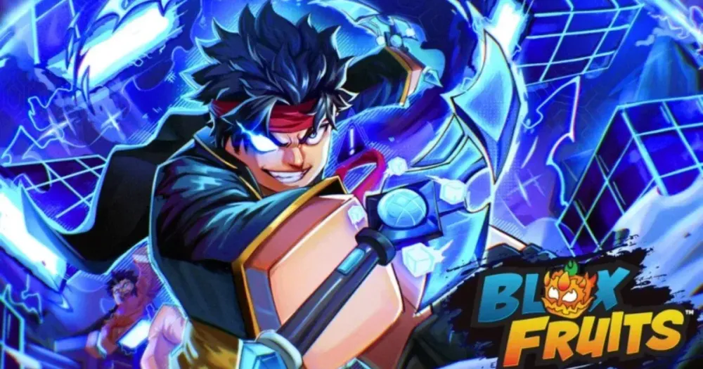

Blox Fruits are mysterious fruits which grant their user supernatural abilities when eaten. They are the main, core mechanism of the game, as well as being represented in the game title, hence Blox Fruits. Each Blox Fruit has its own unique power. However, in exchange for that power, the user will continuously take damage if they stay in water. Some Blox Fruits have special abilities that can grant the user certain immunities, boosted movement, defensive perks, etc.
| common | uncommon | rare | legendery | mythical |
| rocket | flame | light | quake | gravity |
| spin | ice | rubber | buddha | mamoth |
| blade | sand | ghost | love | t-rex |
| spring | dark | magma | creation | dough |
| bomb | eagle | no data | spider | shadow |
| smoke | diamond | no data | sound | venom |
| spike | no data | no data | phinox | gas |
| no data | no data | no data | portal | spirit |
| no data | no data | no data | lighting | tiger |
| no data | no data | no data | pain | yeti |
| no data | no data | no data | blizard | kitsune |
| no data | no data | no data | no data | control |
| no data | no data | no data | no data | dragon |
Control allows the user to manipulate enemies and objects within a designated area, combining exceptional utility, combo pressure, powerful stuns, and devastating damage. Its defining ability is the Domain, a large spherical area in which the user can freely manipulate the environment and gain access to Control's full arsenal. Control has three distinct combat modes: Base Mode, Dagger Mode, and Fist Mode. Outside the Domain, Base Mode primarily relies on its daggers and spatial manipulation to pressure and stun opponents. Once inside the Domain, the user can switch between Dagger and Fist Mode, each specializing in a different aspect of combat. Dagger Mode equips the user with two daggers, allowing them to slice opponents while also manipulating the terrain through spatial cuts. It excels at combo extension and pressure, making it particularly effective for creating difficult-to-escape or effectively unescapable combos. Fist Mode, meanwhile, allows the user to create massive cubic structures from the surrounding terrain, using them both offensively and defensively. It is primarily focused on overwhelming opponents with raw damage; even its M1 attacks can deal approximately 8,000 damage when fully charged.
Buddha (formerly known as "Human: Buddha") is a Legendary Beast-type Blox Fruit that costs $ 1,200,000 or R$ 1,650 from the Blox Fruit Dealer. Buddha allows the user to transform into a towering, golden, and glowing Budai (not to be confused with The Buddha). While transformed, it grants the user immense size and powerful golden light attacks with huge AoE, capable of causing sizeable amounts of destruction. The user can also wield swords, fighting styles, and guns, with greatly increased [M1] range, making them even more deadly. The user is also able to awaken the Buddha fruit, which greatly increases their size, range, damage and grants them the ability to walk and idle in the sea without taking damage. Buddha is regarded as one of the best fruit for Dungeons and Raids, grinding, close-quarters PvE, and crowd control. Additionally, the user can wield any weapon of their choice while transformed, meaning it can facilitate varying stat builds. In PvP, it's often considered abusable, mostly with Cursed Dual Katana as users can easily rack up kills by repeatedly clicking. However, the transformation also makes the user larger and slower, leaving them vulnerable to long-range attacks. Buddha is widely considered one of the best choices for grinding in Second Sea and Third Sea, as it allows the user to not only hit multiple enemies at once, but also take very minimal damage themselves. On top of that, the user can quickly farm mastery on any weapon of their choice, making mastery grinding significantly more efficient. Buddha is also very good for Sea Events, and many events which require quick NPC farms. Buddha is generally a very versatile fruit, being excellent in every activity, hence being widely used and sought after throughout all three seas. However, generally speaking, Buddha is extremely slow, though this can be solved with speed-boosting accessories such as Pilot Helmet and Dino Hood or even the Rabbit Race.
Dragon is a Mythical Beast-type Blox Fruit that costs $ 15,000,000 or R$ 5,000 from the Blox Fruit Dealer. Dragon grants the user dragon-like powers, allowing them to transform into a mythical Dragon. The user can transform into either an Eastern Dragon, resembling those from the East Asian culture, or the Western Dragon, resembling a medieval armored Dragon from European folklore. The user can also transform into a large, tall human-hybrid dragon that deals more massive fiery damage. Dragon has two versions: one being the Western Variant and the other being the Eastern Variant, each with different moves mechanic, animations, and appearances while transformed. It also has a Hybrid Form for both versions when a player uses [V] Imperial Evolution after the Orange Fury Meter (First Fury Meter) is full and before the Red Fury Meter (Second Fury Meter) is full.
Magma is a Rare Elemental-type Blox Fruit that costs $ 960,000 or R$ 1,300 from the Blox Fruit Dealer. Magma allows the user to control, become and manipulate magma, shooting out fist-like projectiles, and allowing hot residual magma to burn enemies on the ground. Magma is known for its high damage, making it one of the best Blox Fruits for Sea Events and grinding. It competes with Light, Flame, and other Elemental fruits in the First Sea and early Second Sea. With low mastery requirements, it allows efficient grinding in its unawakened form. It becomes amazing once awakened in Second and Third Sea, now upgrading the user's [Z] move to do almost as much damage as most [V] moves. It also activates the water walking passive, and with the second awakening also allowing the user to fly. Once fully awakened, it becomes one of the best fruits due to its performance in Sea Events like Leviathan, Sea Beast, and Ship Raids. However, its slow moveset and reliance on puddles and external stuns make it less useful for PvP. It is also recommended to turn off "Camera Shake" to grind much more smoothly.
Light is a Rare Elemental-type Blox Fruit that costs $ 650,000 or R$ 1,100 from the Blox Fruit Dealer. Light allows the user to create, become and manipulate light itself to inflict damage to enemies; it also allows the user to fly at the speed of light, conjure a light spear, and use fast kicks and ranged rays to damage opponents. Light is considered to be the best grinding fruit in the First Sea and early to mid Second Sea since it is an Elemental Blox Fruit and has AoE moves, decent damage, relatively low mastery requirements, [M1] attacks, and one of the fastest mobility abilities in the game, being the [F] Light Flight move. However, Awakened Buddha is more recommended in Second Sea and Third Sea due to the high Elemental Immunity level requirements in order to activate Elemental Reflex and more NPCs having Aura later on. Light's awakened version is a solid choice for PvP due to its good stuns, decent range, but its moves are easily Instinct-trickable and its awakened version lacks AoE with its [C] Lightspeed Destroyer and [X] Hand of the Emperor. Light also requires good aim to be used efficiently in PvP. Light is a good grinding fruit recommended for First Sea to mid Second Sea due to it having Elemental Reflex and low mastery requirements, Light is also a solid choice for PvP except for it is easily Instinct-trickable moves. But Light is not recommended for Third Sea due to the high Elemental Immunity level requirements in order to activate Elemental Reflex and more NPCs having Aura later on.
Gas is a Mythical Elemental-type Blox Fruit that costs $ 3,200,000 or R$ 2,500 from the Blox Fruit Dealer. Gas allows the user to create, become, and manipulate concentrated and flammable gas, unleashing devastating attacks against unfortunate foes. The user also gains a purely cosmetic ring of purple fumes. Additionally, they can condense the vapor they produce, transforming into a towering and powerful gas knight, as mentioned in the quote above. This transformation drastically enhances and alters their attacks while also granting the ability to stand and walk on water, similar to Ice, Yeti, Magma, Control, and Buddha(Awakened) In its physical form, Gas is a fairly valuable trade item and is highly sought after. The fruit boasts extremely high AoE, strong damage output, and excellent combo potential. While the untransformed version’s AoE is somewhat bad , the transformed form shines as one of the best tanks and anti-team fruits in the game, thanks to its huge AoE, spammable abilities, and overall great damage. These traits make Gas a solid choice for grinding, Raids, and Dungeons. While Gas is a great fruit grinding for all seas due to its elemental immunity and [M1] attacks, it is recommended to use the [M1] only four times and wait ~1.5 seconds while untransformed to avoid the high knockback on the last [M1] making the early grind without transformation easier. Gas excels in Sea Events thanks to its ability to stand and walk on water, short cooldowns, and high damage output. Both of its [M1] attacks can also damage Sea Beasts, making it even more effective. Because Gas users can stand on water, it is recommended to equip the Leviathan Crown to improve drop rates and further boost its already high damage. Pairing this with the Ghoul Race’s V3 Ability allows for extremely fast cooldowns, enabling ability spam and maximizing damage output. However, this strategy carries some risk — missing attacks can quickly deplete the user's Gas Meter.
Kitsune is a Mythical Beast-type Blox Fruit that costs $ 8,000,000 or R$ 4,000 from the Blox Fruit Dealer. Kitsune grants the user the ability to conjure and manipulate blue fire into destructive attacks and allows them to transform into a creature from Japanese mythology, the Kitsune, enhancing their attacks significantly, and many abilities such as speed and the ability to walk on water, at the cost of some of their tails. As of Update 29, Kitsune is the third rarest and third most expensive Blox Fruit, making it a very valuable asset to have in trading. In Blox Fruits, Kitsune is an excellent choice for grinding in all three seas, being nearly as good as Buddha in almost every aspect except for versatility. However, due to its M1 damage being lower than Buddha, and the inability to idle on water, Sea Events and Raids can be challenging to handle. Moreover, low level players could struggle to meet the mastery requirements to unlock Kitsune's moves, and the M1 attacks can be a bit annoying to use in open areas, due to its high knockback, though not as severe as Gas's M1 attacks, and its moves are relatively easy to Instinct trick.